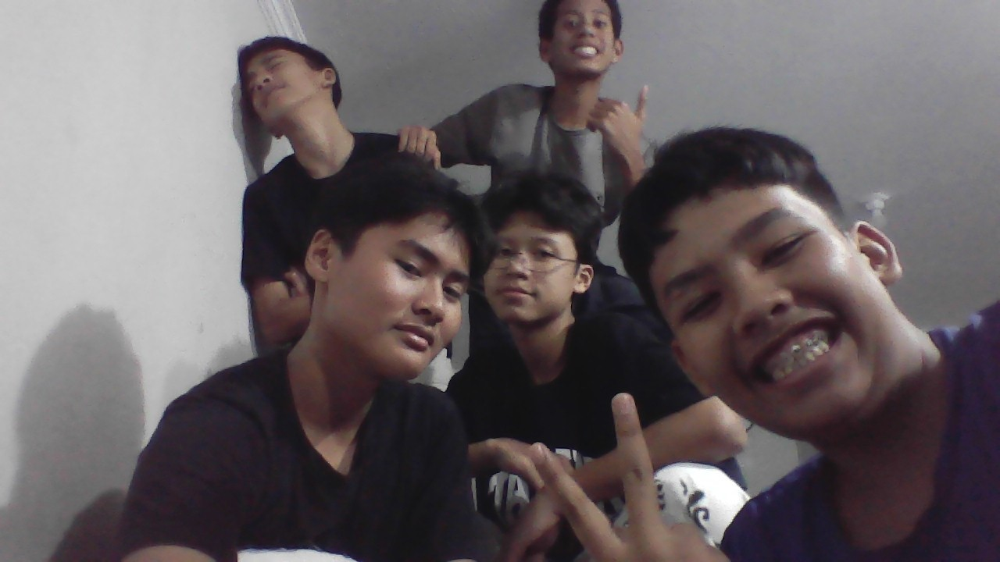

Kamar Syatibi

Anggota kamar
- Fadel
- Fathi
- Hisyam
- Nizar
- Jamil
- Rakky
- Faiq
- Usamah
- Barra
- Kahfi
- Anhar
- Faiz
Kamar Syatibi sangat seru sekali,banyak pengalaman yang di dapat,apalagi
klo maling itu pasti seru bett dah. Ana sudah 2 tahun bersama kamar
syatibi jadi sudah banyak sekali cerita cerita seru yang di dapat. Kamar
Syatibi sudah berganti musyrif sebanyak 3x,yang pertama ustad zidan
kemudian ustad rio dan sekarang ustad farhan.
Kamar Yang Ada Di PTPA :
- Ibnu Katsir
- Al kisai
- Syatibi
- Nafi Al Madani
- Qolun
- Kholaf
- Abu Jafar
- Abu Amr
- Ibnu Amir